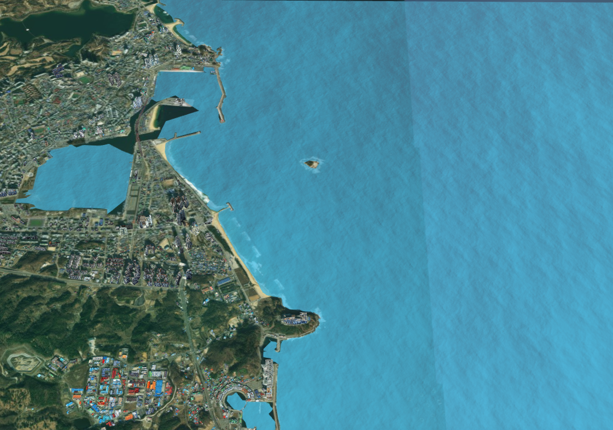

2026-04-12 표류 실측·예측 POI
실측 실측 정보 (GPX)
- 최초 투하시간
- 2026-04-12 09:15:00
- 최종 회수시간
- 2026-04-12 17:00:00
- 총 표류시간
- 7시간 45분 (7.75h)
- 최종 회수시간
- [X] 128.62000, [Y] 38.23400
예측 예측 정보 (MOHID 모델)
- 초기시간
- 2026-07-14 07:30:00
- 최종시간
- 2026-07-15 10:50:00
- 예측간격
- 10분
- 발생/발견지점
- [경도] 128.62000, [위도] 38.23400